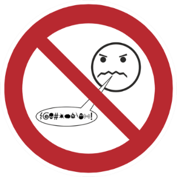

How algorithms designed to maximise engagement became the most effective radicalisation infrastructure in history — and how a comment section becomes a pipeline to real-world violence.
“The algorithm does not care about democracy, or the mental health of its users, or the truth. It cares about engagement. And outrage drives engagement better than anything else.”
Frances Haugen, Facebook whistleblower — paraphrased from Senate testimony, 2021Online hate speech and digital radicalisation are among the most consequential and least understood harms produced by the internet. Unlike the drug trade or piracy, these are not primarily crimes of commerce — they are crimes of ideology and influence, operating through the same recommendation systems, comment threads, and algorithmic feedback loops that billions of people use every day.
Hate speech — content that dehumanises individuals or groups based on characteristics such as race, religion, gender, sexuality, or national origin — has always existed. The internet did not create it. What the internet did was give it distribution at zero marginal cost, algorithmic amplification at scale, and anonymity for its producers. A message that once circulated in a pamphlet reaching hundreds can now reach millions within hours.
The link between online hate speech and real-world violence is not theoretical. It is documented in court records, post-attack manifestos, and the testimony of survivors and investigators from Christchurch to Pittsburgh, from Buffalo to Halle. Understanding this pipeline is essential to confronting it.
Radicalisation rarely happens overnight. Researchers describe it as a gradual journey — each step feeling like a small, natural progression from the last. The internet has industrialised this process, making it faster, more scalable, and harder to detect.
The journey begins with entirely ordinary content consumption — YouTube videos, Facebook groups, Twitter/X feeds, Reddit threads. A user searches for political commentary, news, comedy, or niche hobbies. Nothing is extreme yet. This is where the algorithm first observes preferences.
Recommendation algorithms surface increasingly provocative content — videos critiquing feminism, immigration, or specific ethnic or religious groups. Content that generates strong emotional reactions (anger, fear, disgust) drives longer watch times, which the algorithm rewards with wider distribution. The user has not yet left the mainstream platform.
The user is directed — often explicitly, via links in video descriptions or comments — to Discord servers, Telegram channels, or private Facebook groups. Here, the norms shift. Rhetoric that would be moderated on mainstream platforms is not only tolerated but celebrated. Community belonging is leveraged to normalise escalating content.
The final pre-violence stage: imageboards (4chan’s /pol/, 8kun), dark web forums, and ultra-fringe social networks where no content moderation exists. Dehumanising language about target groups is normalised. Violence is discussed openly, sometimes celebrated. Manifestos from past attackers are shared approvingly.
In the most extreme cases, online radicalisation translates to real-world violence. Attackers at Christchurch, Pittsburgh, Halle, El Paso, and Buffalo were all deeply embedded in online extremist communities before their attacks. The online environment provided ideology, tactical inspiration, community validation, and in some cases operational planning support.
No engineer at YouTube, Facebook, or Twitter designed their recommendation systems to radicalise users. But engagement-optimised algorithms have an inherent structural bias toward content that triggers strong emotional responses — and hatred, fear, and outrage are among the strongest emotional triggers available.
Recommendation systems are primarily optimised to maximise time spent on platform. Content that generates strong emotional reactions — including anger, fear, and moral outrage — demonstrably drives longer engagement than neutral content. This creates a systematic bias toward amplifying emotionally activating material, regardless of its accuracy or social impact.
YouTube’s recommendation system was specifically studied for what researchers termed the ‘rabbit hole’ problem. Users who watched moderately political content were systematically recommended progressively more extreme content — with each recommendation optimised individually but the cumulative effect driving users toward increasingly fringe material.
Personalisation algorithms create information environments in which users are shown content that confirms existing beliefs. Over time, this narrows the range of perspectives encountered and reinforces existing views — including extremist ones. Users within filter bubbles may come to believe their views are more widely shared than they actually are.
Social media platforms design virality mechanics — likes, shares, retweets — that incentivise the production and dissemination of emotionally activating content. Hate speech and outrage content consistently outperforms neutral content on these metrics. Facebook’s internal research (revealed by Frances Haugen in 2021) found that ‘angry’ reactions were distributed significantly more widely by the algorithm.
Online anonymity removes social constraints that moderate in-person speech. Research on the ‘online disinhibition effect’ documents that people say things online they would never say in person — including expressions of hatred, threats, and dehumanising language. Pseudonymous platforms create a perceived consequence-free environment for hate speech production.

Every major platform has a distinct relationship with hate speech — shaped by its technical architecture, moderation policies, ownership, and user demographics.
YouTube’s recommendation engine has been extensively documented as a radicalisation vector. Its watch-time optimisation systematically surfaced increasingly extreme content to users who engaged with politically adjacent material. Following significant regulatory and press pressure from 2019 onward, YouTube made changes to its recommendation algorithm and removed thousands of channels. Researchers debate the effectiveness of these changes.
Significant reforms — contested effectivenessTelegram has become the primary communication infrastructure for extremist movements globally — from far-right neo-Nazi networks in Europe to jihadist propaganda channels. Its combination of massive public broadcast channels, end-to-end encrypted private messaging, and minimal content moderation makes it the platform of choice for groups seeking to communicate at scale while evading enforcement. Following Pavel Durov’s 2024 arrest in France, the platform announced improved cooperation with law enforcement.
Critical infrastructure for extremismTwitter’s acquisition by Elon Musk in 2022 and the subsequent dismantling of significant portions of its Trust and Safety team has been accompanied by documented increases in hate speech on the platform. Research found measurable spikes in slurs targeting multiple minority groups following the acquisition. The platform was fined €54 million by Germany’s Federal Network Agency in 2023 for failure to comply with NetzDG requirements. The EU Digital Services Act has placed Twitter/X under heightened regulatory scrutiny.
Post-acquisition safety deterioration documentedMeta operates the largest content moderation operation in the world — and is still widely documented as a vehicle for hate speech at scale, particularly in markets with non-English languages where its moderation capabilities are significantly weaker. Internal research leaked by Frances Haugen in 2021 showed the company was aware its algorithms amplified divisive and hateful content, and that algorithmic changes to reduce this amplification were rejected because they reduced overall engagement metrics.
Largest moderation operation — uneven globally4chan’s /pol/ (Politically Incorrect) board and its successor 8kun are the internet’s most documented incubators of far-right extremism. Anonymous posting, near-zero moderation, and a culture of deliberate transgression have made them the origin point of multiple extremist memes, movements, and ultimately mass-casualty attacks. The Christchurch, El Paso, and Buffalo attackers all had significant presence in these communities and posted or linked their manifestos there.
Primary incubator of far-right extremismA constellation of alternative platforms has emerged positioning itself as ‘free speech’ alternatives to mainstream social networks. These platforms have become gathering points for users removed from mainstream platforms for hate speech violations. While their audiences are smaller, they create ideological echo chambers with minimal content friction and have been associated with coordination of harassment campaigns and, in the case of Gab, the Pittsburgh synagogue shooter’s primary online community.
Deplatforming destination — concentrated extremismThe following attacks were carried out by individuals whose online radicalisation is documented in court records, investigative reports, and the perpetrators’ own words. These are not isolated anomalies — they represent a documented and recurring pattern in which online extremist communities provide ideology, inspiration, tactical knowledge, and emotional validation to individuals who subsequently commit violence.
The attacker Brenton Tarrant had been deeply embedded in online far-right communities for years before his attack on two mosques in March 2019. He posted his manifesto on 8chan, live-streamed the attack on Facebook, and linked explicitly to internet memes and online culture throughout his writing. The stream remained on Facebook for 17 minutes before removal and was copied and reposted millions of times despite extensive takedown efforts. The New Zealand Royal Commission found that online radicalisation played a central role. The attack directly prompted the Christchurch Call — an international initiative to eliminate terrorist and violent extremist content online.
Robert Bowers, who killed eleven worshippers at the Tree of Life synagogue, was an active user of Gab — the alt-right social network. In the hours before his attack he posted explicitly antisemitic content. Gab had been repeatedly criticised for its minimal content moderation and its positioning as a refuge for users banned from mainstream platforms. The attack led to Gab being temporarily dropped by its hosting provider, payment processor, and domain registrar — raising significant questions about the role of platform infrastructure providers in moderating online hate.
Payton Gendron, who killed ten Black shoppers at a supermarket in Buffalo, New York, left an extensive manifesto documenting his years of immersion in 4chan’s /pol/ board. He described finding and internalising the ‘Great Replacement’ conspiracy theory through online communities. He live-streamed the attack on Twitch. His manifesto was a near-direct copy of the Christchurch attacker’s, demonstrating the ‘inspiration cascade’ dynamic in which online communities treat past attackers as role models and tactical templates.
Patrick Crusius posted a manifesto on 8chan minutes before his attack on a Walmart in El Paso, Texas, targeting Hispanic shoppers. The manifesto echoed the Great Replacement theory and cited the Christchurch attack as direct inspiration. The 8chan platform — which had also hosted the Christchurch and Poway synagogue attack manifestos — was subsequently taken offline by its infrastructure provider Cloudflare. It later returned as 8kun under different infrastructure.
There is no single universally agreed legal definition of hate speech. The definitional challenge — distinguishing hate speech from protected expression — is one of the most contested questions in free speech law, and the answer varies significantly by jurisdiction.
Most definitions require that content dehumanise or incite discrimination against an identifiable group based on protected characteristics — race, religion, gender, sexuality, national origin. The threshold for criminalisation varies: some jurisdictions require a direct incitement to hatred or violence; others include content that merely glorifies discrimination.
Incitement to violence is a distinct and more clearly defined category — direct calls for violence against specific individuals or groups. This is more widely criminalised than hate speech per se, including in the United States where general hate speech is constitutionally protected under the First Amendment. The distinction between hate speech (protected in the US) and incitement (not protected) is a core tension in American platform regulation debates.
A significant category of content is not illegal in any jurisdiction but is nonetheless harmful — content that demeans, stereotypes, or degrades groups without meeting the legal threshold for hate speech. Platforms must decide whether to moderate this content through their own policies, independent of what the law requires. This decision — and its inconsistency — is a source of major ongoing controversy directly addressed by the EU Digital Services Act.
The legal response to online hate speech is more divergent globally than almost any other category of internet crime — shaped by fundamentally different constitutional traditions, particularly around free speech.
Germany’s Netzwerkdurchsetzungsgesetz (NetzDG) requires large social media platforms to remove clearly illegal hate speech within 24 hours of a valid complaint, with fines of up to €50 million for systemic non-compliance. Twitter/X was fined €54 million in 2023. Germany’s particularly stringent approach reflects its historical experience with Nazi propaganda — Volksverhetzung (incitement to hatred) laws date to the post-war period and carry custodial sentences of up to five years. Denial of the Holocaust is a specific criminal offence.
The EU’s Digital Services Act, fully in force from 2024, requires large platforms (over 45 million EU users) to conduct annual risk assessments of their systemic risks — including the amplification of hate speech — and to implement mitigation measures. Critically, it targets not just illegal content but the algorithmic systems that amplify it, requiring platforms to provide opt-out options from recommendation systems. Fines of up to 6% of global turnover make it the most financially consequential platform regulation in history.
The UK’s Online Safety Act takes a ‘duty of care’ approach, requiring platforms to protect users from both illegal content and — for the largest platforms — content that is ‘legal but harmful’. This expansive scope was controversial, with critics arguing the ‘legal but harmful’ provisions could threaten free expression. Ofcom has powers to fine platforms up to £18 million or 10% of global turnover for non-compliance.
The United States presents the starkest contrast: the First Amendment provides extremely strong protections for speech including most hate speech, meaning there is no general federal hate speech law. Incitement to imminent lawless action is not protected (Brandenburg v. Ohio, 1969), but the threshold is very high. Section 230 of the Communications Decency Act additionally immunises platforms from liability for third-party content, reducing legal pressure to moderate. US platforms are therefore largely self-regulated.
Platform hate speech removal rates by jurisdiction
Groups most targeted by online hate speech
Test your knowledge on hate speech, radicalisation, and all other internet crime topics — 10 randomised questions, no time limit.
Take the Quiz →